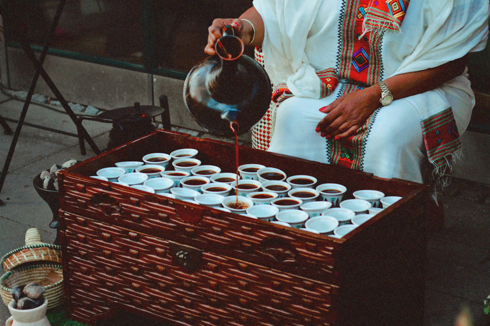
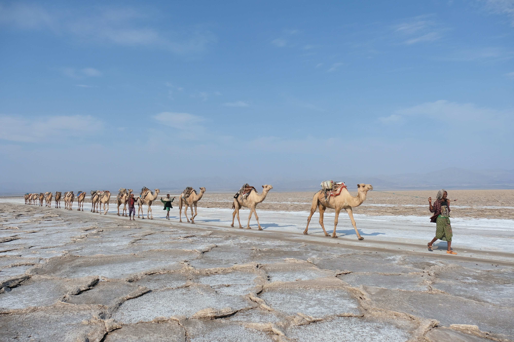

Addis Ababa, the vibrant capital city of Ethiopia, is a fascinating destination that offers a mix of rich history, cultural diversity, and breathtaking landscapes. If you're looking for a fun and unique travel experience, here are ten exciting reasons why you should visit Addis Ababa.

1.Ethiopian Cuisine Delights:
Addis Ababa is a food lover's paradise, renowned for its diverse and flavorful
Ethiopian cuisine. Don't miss the chance to try injera (traditional sourdough flatbread)
with a variety of mouthwatering stews and spicy dishes. The city is brimming with
traditional restaurants, local markets, and street food stalls waiting to tempt your
taste buds.

2.Coffee Culture:
Ethiopia is the birthplace of coffee, and Addis Ababa is the perfect place to immerse
yourself in the country's vibrant Coffee culture. Visit local coffeehouses, known as
"buna bet," where you can experience traditional coffee ceremonies, taste freshly brewed
coffee, and learn about the history and significance of coffee in Ethiopian culture.

3.Mesmerizing Landscapes:
Surrounded by stunning landscapes, Addis Ababa serves as a gateway to the breathtaking
Ethiopian
highlands. Take a day trip to Entoto Mountain, located on the outskirts of the city, and
enjoy
panoramic views of Addis Ababa from its summit. The beautiful national parks, such as
Simien
Mountains and Bale Mountains, are also easily accessible for nature enthusiasts.
4.Rich History and Culture
Addis Ababa is a city steeped in history and culture. Explore the National Museum, home
to the
famous fossilized remains of Lucy, one of the earliest known human ancestors. Visit the
Holy
Trinity Cathedral, an architectural masterpiece, and the burial place of Emperor Haile
Selassie.
Discover the vibrant traditional music, dance, and art scene that showcases the
country's
cultural heritage.
6.Colorful Markets
Addis Ababa is filled with vibrant markets that offer a sensory overload of sights,
sounds,
and smells. Mercato, one of the largest open-air markets in Africa, is a bustling hub
where
you can find everything from traditional crafts and spices to clothing and fresh
produce.
Exploring the markets is an excellent way to interact with locals and experience the
vibrant
atmosphere of the city.
7.Addis Ababa Jazz Scene
Known as the "Jazz Capital of Africa," Addis Ababa boasts a thriving jazz scene. The
city is
home to numerous jazz clubs and venues where you can enjoy live performances by talented
local
musicians. Immerse yourself in the
soulful rhythms and melodies of Ethiopian jazz, a unique fusion of traditional Ethiopian
music
and Western jazz influences.
8.Warm Ethiopian Hospitality
Last but not least, Addis Ababa is renowned for its warm and welcoming people.
Experience the
famous Ethiopian hospitality as you interact with locals, who are known for their
friendliness
and generosity. Engage in conversations, share meals, and create lasting memories with
the locals
who will make your visit truly special.
9.Festivals and Celebrations:
Addis Ababa hosts vibrant and colorful festivals throughout the year,
showcasing the country's rich cultural heritage. The Ethiopian New Year
(Enkutatash) in September, the Ethiopian Christmas (Genna) in January,
and the Ethiopian Epiphany (Timket) in January are some of the major
celebrations that offer a unique cultural experience. During these festivals,
the city comes alive with traditional music, dance, religious processions,
and festivities.
10.Traditional Music and Dance Performances
Addis Ababa is a hub for traditional Ethiopian music and
dance performances. Many cultural centers and music venues in the city offer regular
shows where
you can witness captivating performances featuring traditional instruments, vibrant
costumes,
and energetic dances. It's a fantastic opportunity to immerse yourself in the rhythmic
melodies
and expressive movements of Ethiopian culture.
in conclution Addis Ababa is a vibrant and culturally rich city that offers a unique and exciting travel experience. From indulging in delicious cuisine to exploring historical sites, enjoying the lively nightlife, and engaging with the friendly locals, there are countless reasons to visit this captivating Ethiopian capital. Plan your trip to Addis Ababa and embark on a memorable adventure that will leave you with a deep appreciation for the city's heritage and culture.